Проверка структуры
Проверены размер таблицы, названия полей, пустые строки и дублирующиеся записи.
Исследование рейтингов лапши быстрого приготовления.
CSV · 2 580 наблюдений 12 визуализаций
От сырых данных — к понятным выводам.
Перед анализом важно привести значения к согласованному формату. Очистка помогает избежать ошибок в расчётах и сделать сравнения воспроизводимыми.
Проверены размер таблицы, названия полей, пустые строки и дублирующиеся записи.
Поле Stars приводится к числовому типу, текстовые значения очищаются от лишних пробелов.
Пропущенные значения не подменяются произвольными числами. Для визуализаций пропуск стиля обозначен отдельно.
В исходном наборе 2 580 записей, из которых 2 577 содержат числовую оценку. У поля Style два пропуска, а Top Ten заполнено только у небольшой части записей. Полных дубликатов строк не обнаружено.
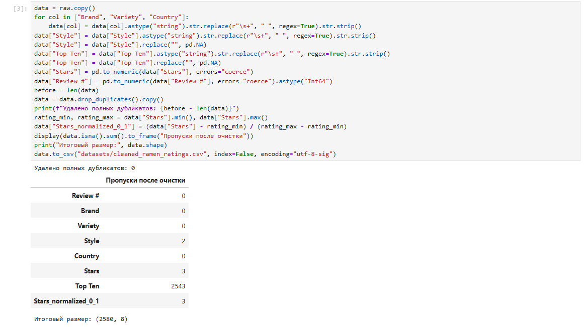
Этот блок отвечает на вопросы о типичной оценке, частоте низких и высоких баллов и общем характере распределения.
Оценки чаще концентрируются в верхней части шкалы: особенно заметны значения 3,5–4,0 и максимальная оценка 5,0. При этом в данных есть и низкие оценки, поэтому среднее не описывает весь опыт рецензентов.
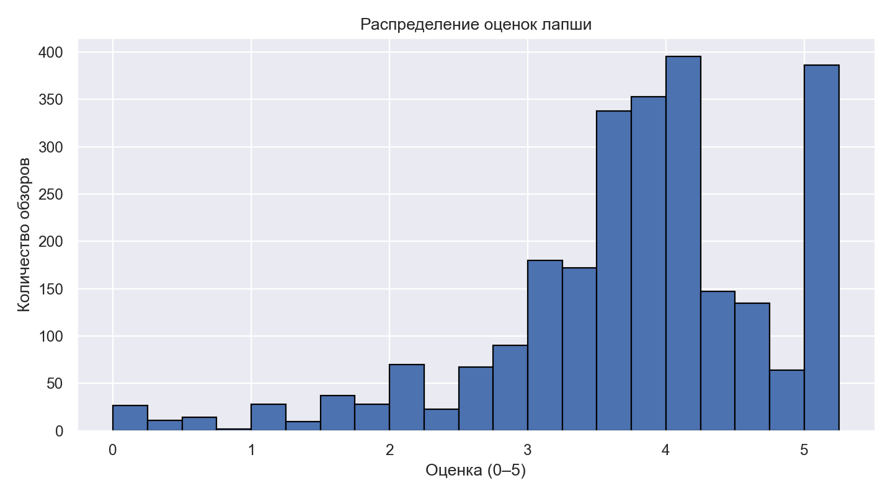
Сравнение средних оценок форматов Cup, Pack, Bowl и других. Различия следует трактовать осторожно, особенно для редких форматов.
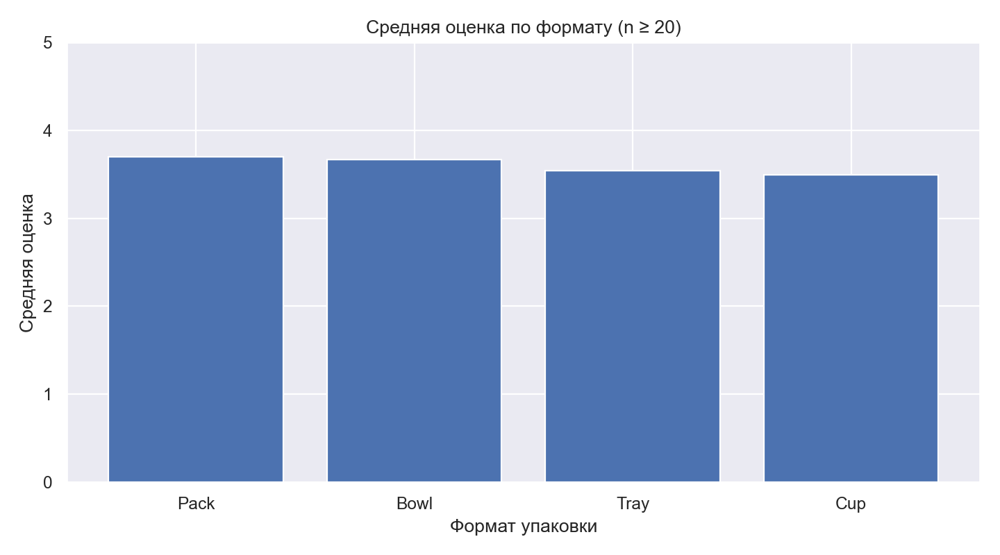
Упаковка Pack преобладает в выборке, а Bowl и Cup встречаются заметно реже. Это описывает структуру обзоров, а не обязательно структуру всего рынка.
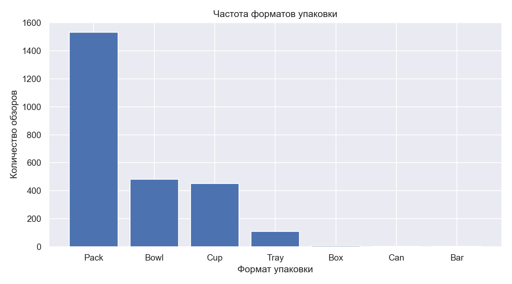
Распределения показывают, что внутри стран оценки могут заметно различаться. Одного среднего значения недостаточно, чтобы описать разнообразие отзывов.
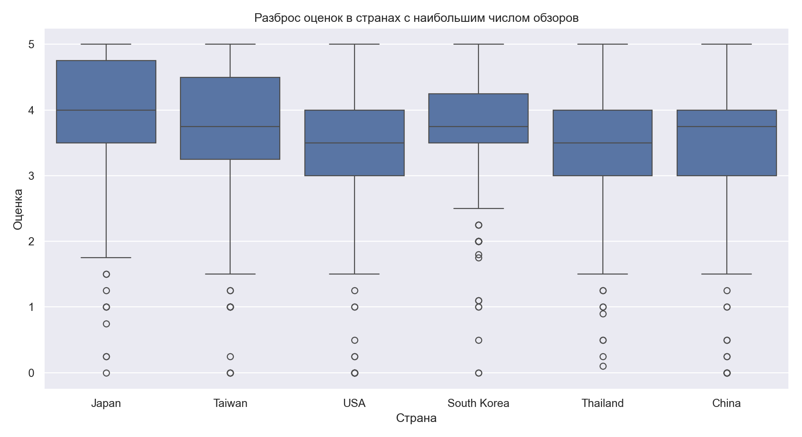
Число обзоров в стране описывает структуру именно этого датасета, а не мировое потребление рамена. Для сравнения средних оценок важно учитывать размер выборки.
Япония и США входят в число наиболее представленных стран, за ними следуют Южная Корея и Тайвань. Поэтому общий результат сильнее отражает страны с большим числом записей.
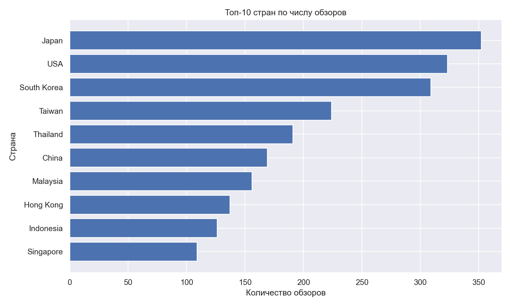
Средние оценки отличаются между странами, но эти различия могут зависеть от брендов, типов продуктов и размера выборки. Сравнение ограничено странами с достаточным количеством наблюдений.
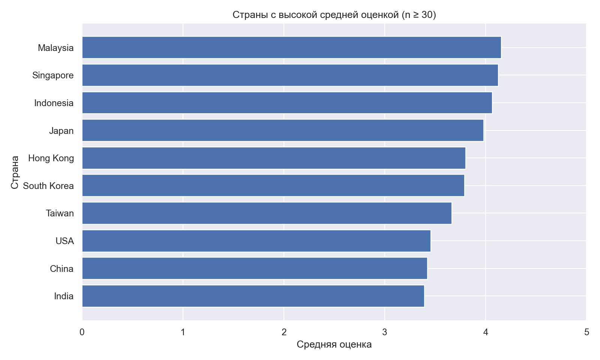
Тепловая карта позволяет увидеть, что набор популярных форматов неодинаков в разных странах. Пустые или скрытые ячейки означают недостаточно наблюдений для надёжного сравнения.
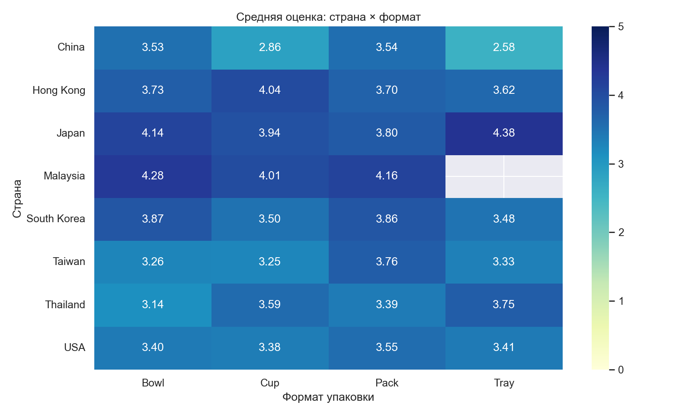
Распределение средних значений помогает оценить общий диапазон различий между странами. Даже заметная разница не доказывает, что география сама по себе определяет оценку продукта.
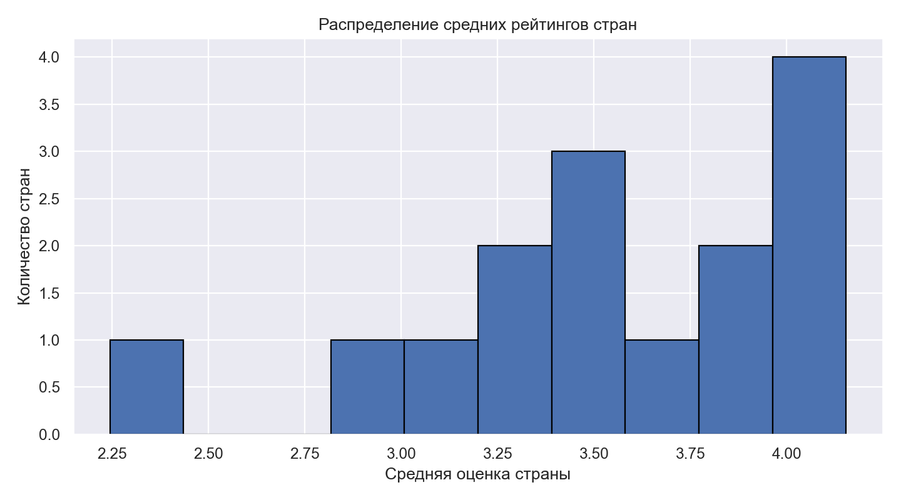
Популярность бренда в файле измеряется количеством обзоров. Это не то же самое, что рыночная доля или продажи.
Nissin заметно лидирует по количеству обзоров. Это даёт бренду более широкое представительство в данных, но не означает автоматически более высокие продажи или лучшую оценку.
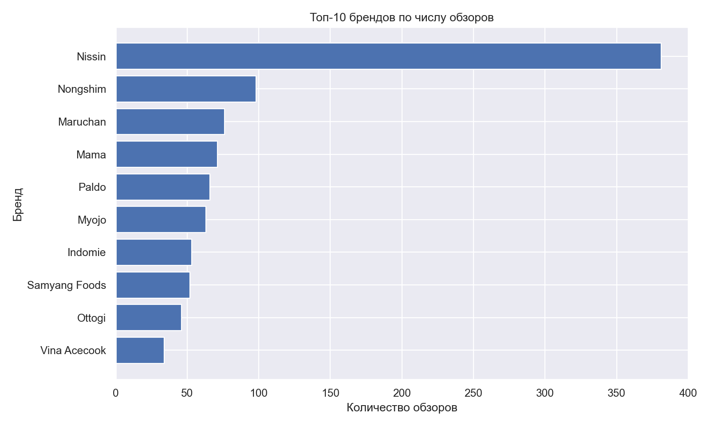
Рейтинги брендов различаются, однако сравнение нужно читать вместе с числом обзоров. Высокая средняя оценка на небольшой выборке может быть нестабильной.
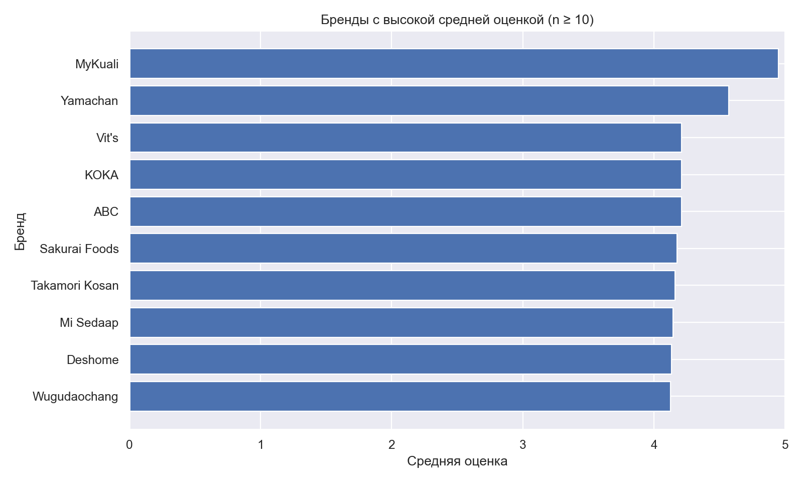
Если в поле Top Ten указаны годы, их можно выделить и изучить динамику попаданий в рейтинговые списки. Это не временной ряд всех оценок: год известен только для записей с таким упоминанием.
В поле Top Ten встречаются упоминания за 2012–2016 годы. Число упоминаний по годам меняется незначительно, но этот график описывает только записи с соответствующей отметкой, а не весь рынок за эти годы.
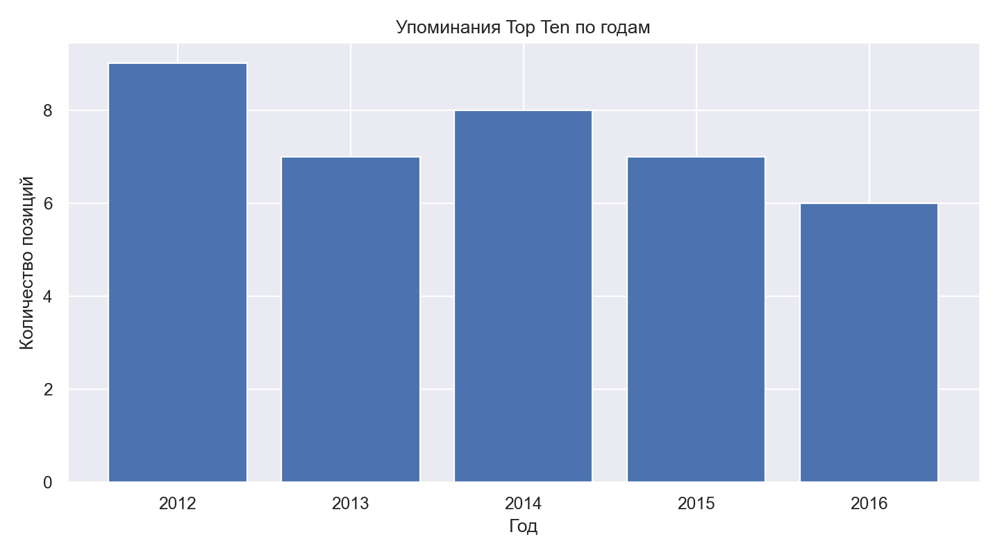
Выводы следует формулировать по результатам графиков, а не только по визуальному впечатлению. Описательная статистика выявляет закономерности, но сама по себе не доказывает причинно-следственные связи.
Наиболее часто встречаются оценки около 3,5–4,0, а оценка 5,0 тоже представлена заметно. Это указывает на преимущественно положительный тон обзоров, хотя наличие низких баллов показывает, что качество воспринимается неодинаково.
Формат Pack, несколько стран и лидирующие бренды занимают большую долю наблюдений. Поэтому общие средние в значительной степени отражают именно наиболее представленные группы и не должны автоматически переноситься на весь ассортимент рамена.
Между странами и брендами заметны различия в количестве обзоров и средних оценках. Однако на эти различия могут влиять состав продуктов, рецептуры, формат упаковки и привычки рецензентов; имеющиеся данные не позволяют выделить единственную причину.
Числовая оценка доступна не для всех записей, а поле Top Ten заполнено редко. Анализ временных упоминаний поэтому охватывает лишь небольшую часть набора и не подходит для вывода о долгосрочном росте или падении популярности.
В ходе исследования набора из 2 580 обзоров рамена удалось увидеть, что оценки в целом смещены к положительной части шкалы, но заметно различаются между продуктами. В данных преобладает формат Pack, а по количеству обзоров выделяется бренд Nissin; при этом представленность бренда или страны нельзя приравнивать к рыночной доле. Сравнение стран, форматов и брендов показывает полезные описательные закономерности, но результаты зависят от объёма и состава выборок. Ограничениями исследования являются пропуски, неравномерное распределение наблюдений и редкие записи Top Ten. Для дальнейшей работы было бы полезно сравнить группы с контролем размера выборки, изучить связь оценок с брендом и упаковкой одновременно и проверить, сохраняются ли выявленные различия на более сбалансированных данных.